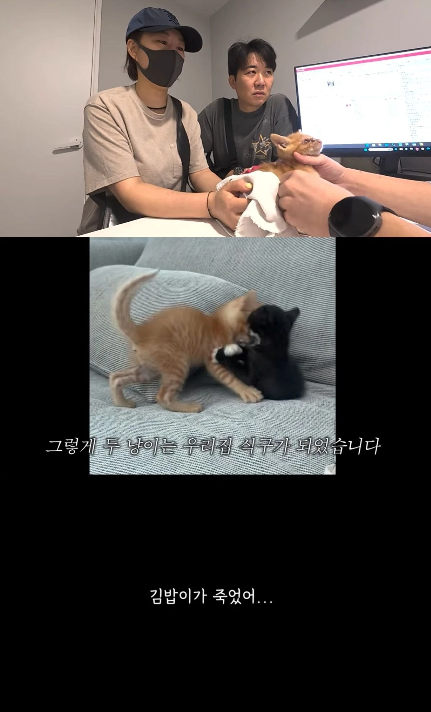
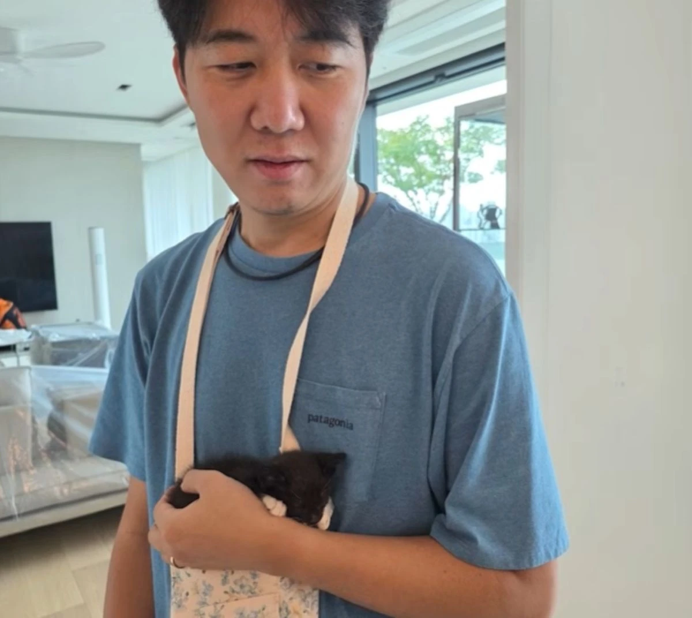

장윤정 반려묘 이별, 김밥이와 짧은 만남
장윤정 반려묘 소식이 마음을 먹먹하게 하네요. 도경완과 함께 구조해 집으로 데려온 고양이 중 김밥이가 세상을 떠났다는 이야기인데요. 두 마리를 구하려고 애썼던 과정과 새 식구를 맞은 설렘이 함께 담겨 더 안타까워요. 김밥이와의 짧은 만남, 곁에 남은 루코의 이야기를 정리해봤어요.
장윤정 반려묘, 구조에서 시작된 만남이에요
장윤정 반려묘 이야기는 벽 틈에 있던 작은 생명을 구하는 과정에서 시작돼요. 두 마리 가운데 한 마리를 먼저 구조했지만 다른 한 마리는 쉽게 빠져나오지 못했는데요. 도경완이 장갑을 끼고 손을 뻗는 장면에는 어떻게든 고양이를 꺼내려는 노력이 담겨 있어요. 집으로 데려오기까지의 과정이 함께 공개돼, 새 식구라는 말이 더 조심스럽고 소중하게 다가옵니다.
저는 이런 장면을 볼 때 작은 고양이 한 마리에게도 여러 사람의 손길이 필요하다는 점을 생각하게 돼요. 구조는 단순히 밖으로 꺼내는 데서 끝나지 않고, 상태를 살피고 머무를 곳을 마련하는 일로 이어지잖아요. 부부 역시 고양이를 구조한 뒤 병원으로 데려갔어요. 반가운 새 가족 소개에 앞서 돌봄이 먼저 있었다는 점을 함께 알아두면, 이 이야기가 조금 더 가깝게 느껴져요.
장윤정 반려묘 이야기에 담긴 새 식구의 설렘
부부는 구조한 두 마리를 집에서 임시 보호하기로 했어요. 고양이들에게 치즈와 김밥이라는 이름도 붙여줬고요. 가족들이 작은 고양이와 처음 교감하는 모습에는 낯설지만 반가운 분위기가 담겨 있어요. 이름을 부르고 품에 안는 평범한 순간이지만, 밖에서 구조한 생명이 집 안으로 들어왔다는 사실을 보여주는 장면이라 눈길이 갑니다. 일상의 풍경에 작은 변화가 생긴 셈이네요.
이름이 생기면 이야기를 듣는 마음도 달라지는 것 같아요. 두 마리의 고양이라는 설명보다 치즈와 김밥이라는 이름으로 기억하게 되니까요. 처음부터 함께 살아온 가족은 아니지만, 집에 들어와 자리를 잡아가는 과정 자체가 소중한 시간이었겠다는 생각이 들어요. 저는 새로운 생명을 맞는 설렘과 돌봐야 한다는 책임감이 이런 장면 안에 함께 들어 있다고 느꼈어요. 가족의 일상에 고양이들이 자연스럽게 스며드는 모습이 따뜻하게 다가옵니다.

김밥이와의 갑작스러운 이별을 전했어요
안타까운 소식은 장윤정이 제작진에게 전화를 걸어 김밥이가 떠났다고 전하면서 드러났어요. 집으로 데려와 함께 지낸 시간이 길지 않았는데 갑작스럽게 이별하게 된 거예요. 장윤정은 병원에 오는 동안에는 숨이 붙어 있었지만 병원에서 세상을 떠났다고 이야기했어요. 새 식구를 맞는 기쁨과 작별의 슬픔이 한 이야기 안에 담겨 있어, 읽는 마음도 쉽게 가벼워지지 않네요.
아주 오래 함께해야만 정이 드는 건 아니잖아요. 이름을 붙여주고 먹는 모습과 자는 모습을 바라보는 동안에도 마음은 가까워질 수 있을 거예요. 그래서 함께한 기간이 짧았다는 이유로 슬픔까지 작게 볼 수는 없겠다는 생각이 들어요. 장윤정이 전한 이야기를 따라가다 보면 특별한 설명을 덧붙이지 않아도 얼마나 갑작스러운 작별이었는지 느껴집니다. 김밥이라는 작은 이름이 유난히 오래 마음에 남네요.
건강에 관한 설명은 공개한 이야기까지 살펴봤어요
장윤정은 김밥이의 체중이 잘 늘지 않았고 설사로 병원을 찾은 적도 있다고 전했어요. 몸집이 너무 작아 검사를 진행하기 어려웠다는 설명도 함께 했고요. 다만 이 이야기만으로 정확한 질환이나 사망 원인을 새롭게 판단할 수는 없어요. 공개된 내용은 보호자가 전한 경과이며, 구체적인 진단 결과 전체가 제시된 것은 아니기 때문이에요. 안타까운 마음과 별개로 그 부분은 조심스럽게 읽게 됩니다.
저는 누가 더 잘했어야 했는지 짧은 장면으로 결론을 내리기보다, 작은 생명을 구하고 돌보려 했던 과정에 마음을 두고 싶어요. 병원 장면과 보호자의 설명만으로 알 수 있는 범위에는 한계가 있잖아요. 건강에 관한 추측을 더하는 대신 구조부터 임시 보호, 이별을 알린 이야기까지 이어서 살펴보면 충분할 것 같아요. 걱정하는 마음이 근거 없는 원인 찾기로 번지지 않았으면 하는 바람도 들어요.
곁에 남은 고양이는 루코라는 이름으로 함께해요
도경완은 남은 고양이 치즈에게 루코라는 새 이름을 붙였다고 밝혔어요. 공개된 사진에는 루코를 품에 안고 있는 모습도 담겨 있는데요. 김밥이와의 이별 뒤에도 곁에 남은 생명을 돌보는 일상은 이어지고 있어요. 고양이 두 마리를 함께 소개하던 장면과 루코를 안고 있는 장면을 나란히 생각하니, 새 가족을 맞는 일에는 기쁨뿐 아니라 여러 마음이 함께 따라온다는 사실을 느끼게 됩니다.
저는 이 소식에서 자극적인 표현보다 이름을 기억해두고 싶어요. 짧게 함께한 김밥이, 그리고 가족 곁에 남은 루코라는 이름이요. 가수의 무대와 방송에서 보던 모습 밖에도 이렇게 작은 생명을 돌보는 일상이 있네요. 가족이 전한 슬픔을 있는 그대로 받아들이고, 루코가 편안하게 지내기를 바라게 됩니다. 반가운 소식만 전할 수는 없지만, 이런 이야기일수록 조금 더 차분하고 다정하게 읽고 싶어요.
Q. 장윤정과 도경완은 고양이를 직접 구조했나요?
A. 벽 틈에 있던 고양이를 구해 병원으로 데려가는 과정이 공개됐어요. 두 마리를 집에서 임시 보호하기로 했어요.
Q. 세상을 떠난 고양이의 이름은 무엇인가요?
A. 부부가 김밥이라고 이름 붙인 고양이예요. 장윤정은 함께 지낸 기간이 짧은 가운데 갑작스럽게 이별했다고 전했어요.
Q. 남은 고양이도 가족과 함께 지내나요?
A. 도경완은 치즈에게 루코라는 새 이름을 붙였다고 밝혔어요. 루코를 품에 안고 있는 모습도 공개됐어요.
